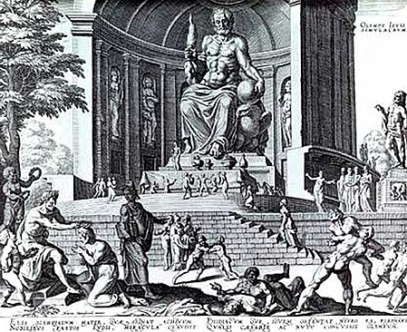

Dzeuso skulptūra Olimpijoje buvo vienas iš Septynių pasaulio stebuklų. Olimpija Senovės Graikijoje buvo svarbus religinis centras, kuriame daugiausiai garbinamas dievas buvo Dzeusas. Šiame mieste buvo rengiamos ir olimpinės žaidynės, šventės ir atletikos varžybos.
